01
Upload
A reviewer uploads a new drug application.
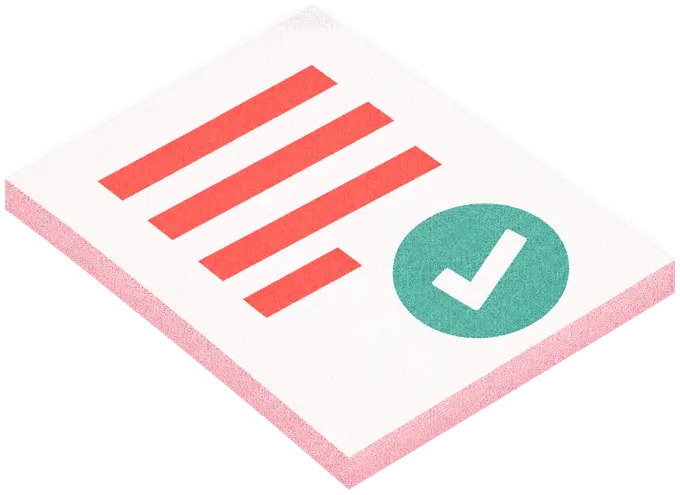
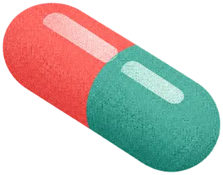
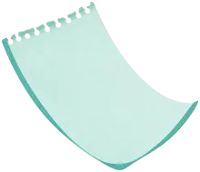
Application.pdfuploaded
Data & AI · Public sector
AI-assisted drug review for a public-sector healthcare agency.
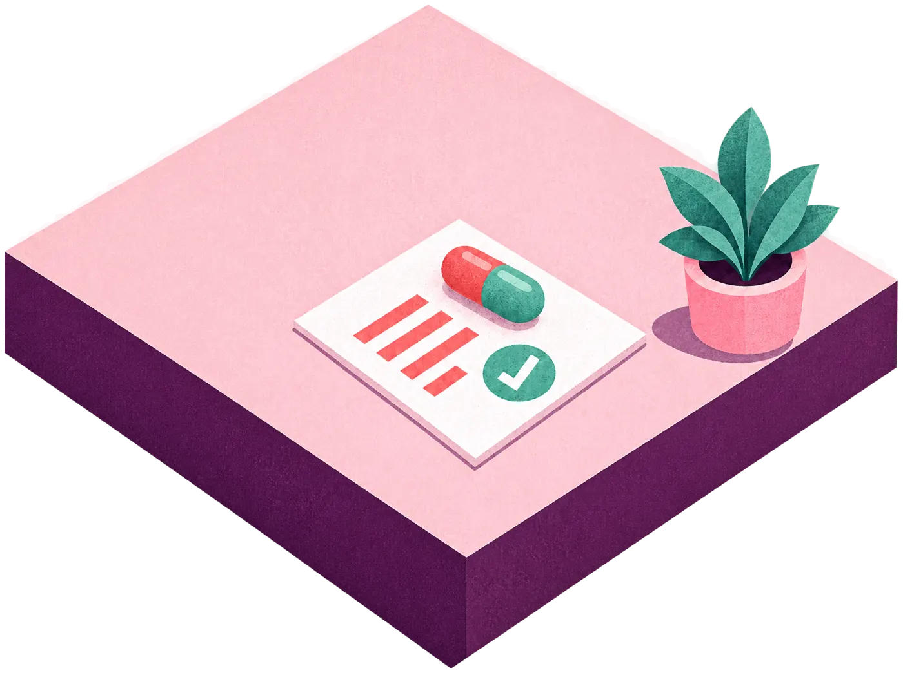
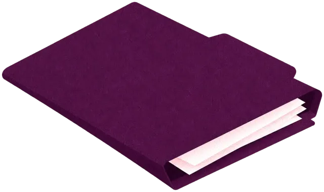
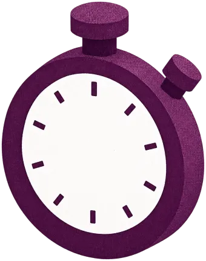
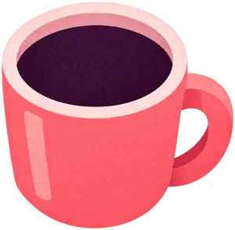
Each new drug application had to be checked, by hand, against past records and prior rulings before any expert judgment could begin.
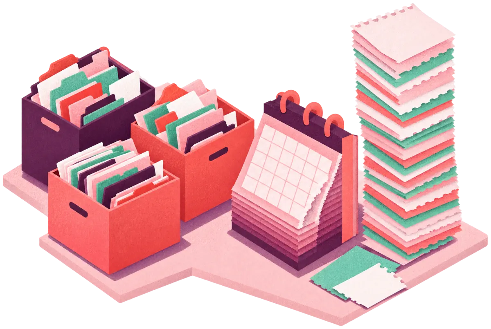
Reviewers gathered the evidence document by document.
Applications kept arriving faster than review capacity could grow.
Outcomes leaned on whichever precedents a reviewer happened to recall.
We designed and delivered a decision-support system built on retrieval-augmented generation (RAG) and an AI agent, grounded only in the agency’s own precedent base, never in generic outside knowledge.
A reviewer uploads a new drug application.



The agent searches the agency’s historical records and prior rulings.
Comparable products and applicable precedents are matched.
A structured preliminary analysis is ready for the reviewer.
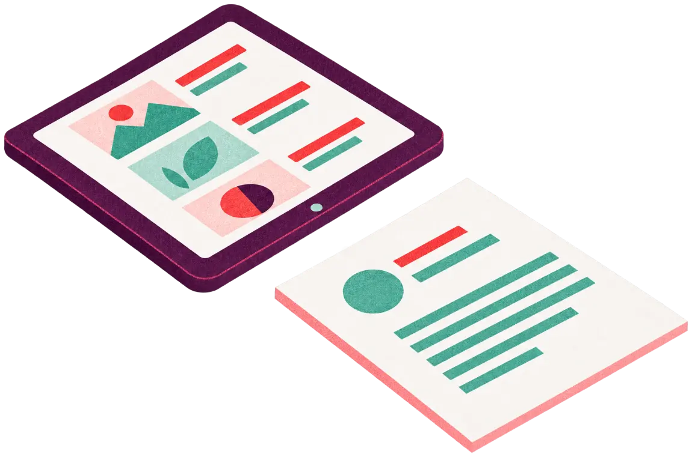
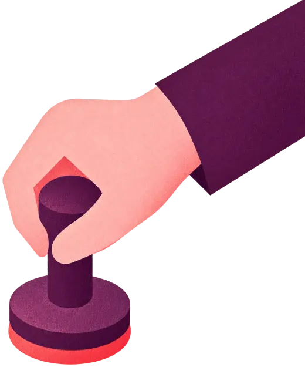
The system never makes the final call. It assembles the evidence; accountable human judgment stays with the reviewer.
In the public sector, traceability is part of the process, not an afterthought. Every finding points back to the records and rulings behind it.
Manual document comparison is gone, and every application is checked against the full historical record rather than what one reviewer happens to recall.
AI assembles the evidence. The reviewer decides.
We design systems and experiences that elevate how people connect, work, and grow.
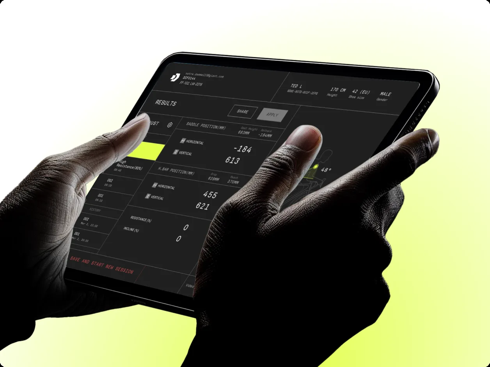
Machine-learning bike fitting that dials in every rider's perfect position.
A mobile companion connecting FLIR's specialized sensors in one live view.
A secure AWS data lake turning factory data into business intelligence.
Automated shipment tracking with real-time status from global carriers.
A global customization platform for made-to-order bicycles, from paint styles to parts.
One consumer identity across services, with secure multi-login.